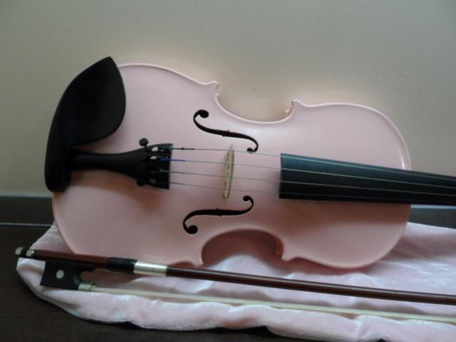
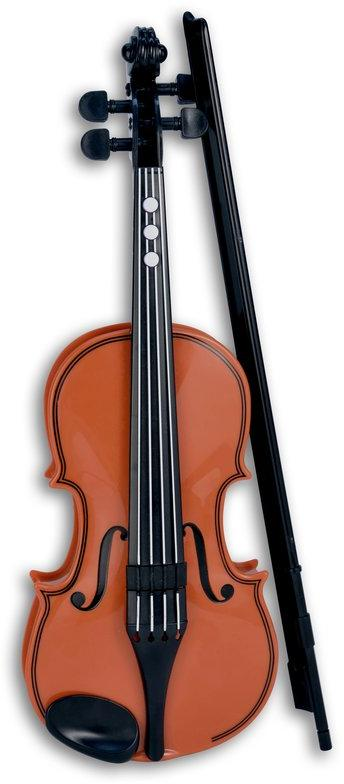
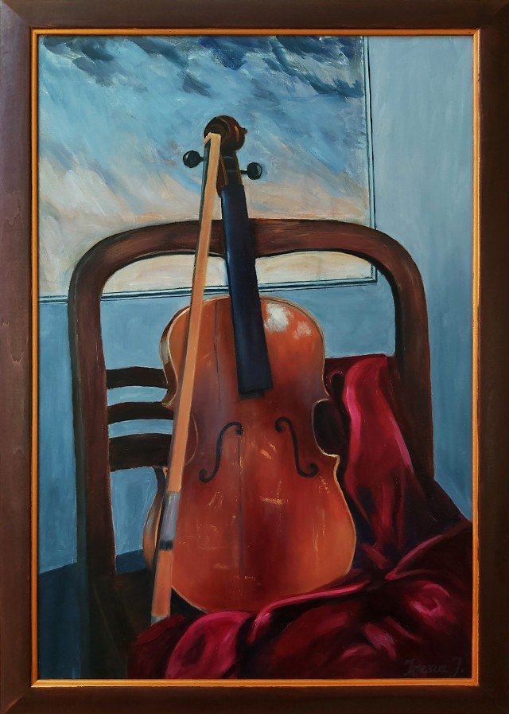

Smuikas - Unijapedija
2020.10.30 03:35
Bendravimas Nauja! Parsisiųsti Unijapedija Android ™! Nemokama Greičiau nei naršyklėje!
Smuikas
Smuikas – styginis instrumentas turintis keturias stygas, suderintas kvintomis.
90 santykiai: Akordeonas , Altas (styginis instrumentas) , Amati , Andrea Amati , Antonijus Stradivarijus , Antonio Amati , Arabijos pusiasalis , Atalyja , Avis , Azija , Barokas , Chordofonas , Dažnis , Džiazas , Didžioji sekunda , Didžioji tercija , Dinamika (mechanika) , Eglė , Elektroninė muzika , Europa , Folklorinis metalas , Fortepijonas , Garsas , Girolamo Amati , Gitara , Harmonija (muzika) , Indų muzika , Indija , Intonacija , Italų kalba , Italija , Jungtinės Amerikos Valstijos , Juodmedis , Karolis IX , Klevas , Klijai , Kompozicija , Kontrabosas , Kremona , Kvinta , Lakas , Lionas , Liutnia , Mediena , Metalai , Piotras Čaikovskis , Plienas , Prancūzija , Raktikaulis , Renesansas , ... , Rokenrolas , Saksofonas , Styga (reikšmės) , Tembras , Tonacija , Trimitas , Vanessa-Mae , Venecija , Violončelė , X amžius , XIV amžius , XIX amžius , XVI amžiaus 10-as dešimtmetis , XVI amžiaus 2-as dešimtmetis , XVI amžiaus 4-as dešimtmetis , XVI amžiaus 6-as dešimtmetis , XVI amžiaus 7-as dešimtmetis , XVI amžiaus 8-as dešimtmetis , XVI amžius , XVII amžiaus 1-as dešimtmetis , XVII amžiaus 10-as dešimtmetis , XVII amžiaus 2-as dešimtmetis , XVII amžiaus 3-as dešimtmetis , XVII amžiaus 5-as dešimtmetis , XVII amžiaus 6-as dešimtmetis , XVII amžiaus 7-as dešimtmetis , XVII amžiaus 9-as dešimtmetis , XVIII amžius , XX amžius , 1720 m. , 1737 m. , 1739 m. , 1740 m. , 1744 m. , 1761 m. , 1762 m. , 1930 m. , 1971 m. , 1980 m. , 1990 m. . Išplėsti indeksą (40 daugiau) Trauktis indeksą
Akordeonas
Akordeonas yra muzikos instrumentas, priklausantis liežuvėlinių aerofonų klasei.
Nauja!!: Smuikas ir Akordeonas · Žiūrėti daugiau
Altas (styginis instrumentas)
Altas – styginis muzikos instrumentas.
Nauja!!: Smuikas ir Altas (styginis instrumentas) · Žiūrėti daugiau
Amati
Amati yra Italų smuikų meistrų šeimos, klestėjusios Kremonoje 1549–1740 metais, vardas.
Nauja!!: Smuikas ir Amati · Žiūrėti daugiau
Andrea Amati
Andrea Amati (1520–1578) – žymus italų smuikų bei violončelių meistras.
Nauja!!: Smuikas ir Andrea Amati · Žiūrėti daugiau
Antonijus Stradivarijus
Antonijus Stradivarijus (1644 m. Kremonoje – 1737 m. gruodžio 18 d. Kremonoje) – italų pasaulinio garso smuikų meistras.
Nauja!!: Smuikas ir Antonijus Stradivarijus · Žiūrėti daugiau
Antonio Amati
Antonio Amati (apie 1540–1608 m.) buvo vyresnysis Andrea Amati sūnus, išradęs modernų smuiką.
Nauja!!: Smuikas ir Antonio Amati · Žiūrėti daugiau
Arabijos pusiasalis
Nuotrauka iš kosmoso. Arabijos pusiasalis – pusiasalis pietvakarių Azijoje, yra tarp Rytų Afrikos ir Indijos.
Nauja!!: Smuikas ir Arabijos pusiasalis · Žiūrėti daugiau
Atalyja
Atalyja Markučiuose. Vilnius, 2006 m. Viekšniuose metu Atalyja – lietuvių folkroko, postfolkloro ir world music grupė, savo kūryboje jungianti archajiškąjį lietuvių folklorą su roko, džiazo, indų muzikos elementais ir išraiškos priemonėmis.
Nauja!!: Smuikas ir Atalyja · Žiūrėti daugiau
Avis
Avis arba naminė avis – porakanopių būrio, dykaraginių (Bovidae) šeimos naminis gyvūnas.
Nauja!!: Smuikas ir Avis · Žiūrėti daugiau
Azija
Azija, didžiausia pasaulio dalis (~30 % viso sausumos ploto), čia gyvena apie 60 % pasaulio gyventojų.
Nauja!!: Smuikas ir Azija · Žiūrėti daugiau
Barokas
Barokas (it. barocco – keistas, įmantrus) – kultūros epocha ir meno kryptis, XVII a. – XVIII a. I pusėje plitusi Europoje ir Lotynų Amerikoje.
Nauja!!: Smuikas ir Barokas · Žiūrėti daugiau
Chordofonas
Klasikinė gitara Chordofonas – muzikos instrumentas, kuriame garsas išgaunamas virpinant stygas.
Nauja!!: Smuikas ir Chordofonas · Žiūrėti daugiau
Dažnis
Sinusinės įvairaus dažnumo bangos – žemiau išdėstytų bangų dažnumas aukštesnis Dažnis – fizikinis dydis, rodantis, kiek kartų įvykis pasikartoja per laiko vienetą.
Nauja!!: Smuikas ir Dažnis · Žiūrėti daugiau
Džiazas
Džiazas – profesionali improvizacinės muzikos rūšis, susiformavusi XIX a. pabaigoje – XX a. pradžioje.
Nauja!!: Smuikas ir Džiazas · Žiūrėti daugiau
Didžioji sekunda
Didžioji sekunda yra vienas iš trijų diatoninėse dermėse dažniausiai pasitaikančių muzikinių intervalų (kiti yra mažoji sekunda, esanti vienu pustoniu siauresnė, ir padidintoji sekunda, vienu pustoniu platesnė).
Nauja!!: Smuikas ir Didžioji sekunda · Žiūrėti daugiau
Didžioji tercija
Didžioji tercija yra didesnysis iš dviejų dažniausiai pasitaikančių muzikinių intervalų, apimančių tris diatoninės gamos laipsnius.
Nauja!!: Smuikas ir Didžioji tercija · Žiūrėti daugiau
Dinamika (mechanika)
Dinamika – mechanikos dalis, kurioje nagrinėjamos kūnų judėjimo greičio kitimo priežastys.
Nauja!!: Smuikas ir Dinamika (mechanika) · Žiūrėti daugiau
Eglė
Eglė – pušinių (Pinaceae) šeimos medžių gentis.
Nauja!!: Smuikas ir Eglė · Žiūrėti daugiau
Elektroninė muzika
Telharmonium, Thaddeus Cahill 1897 m. Elektroninė muzika – muzika, kuri kuriama ir atliekama naudojant elektroniką, elektroninius muzikos instrumentus.
Nauja!!: Smuikas ir Elektroninė muzika · Žiūrėti daugiau
Europa
Europa – vienas iš pasaulio žemynų.
Nauja!!: Smuikas ir Europa · Žiūrėti daugiau
Folklorinis metalas
Folklorinis metalas (arba) – sunkiojo metalo atšaka, išsivysčiusi Europoje, paskutinįjį XX a. dešimtmetį.
Nauja!!: Smuikas ir Folklorinis metalas · Žiūrėti daugiau
Fortepijonas
Fortepijono klaviatūra Fortepijono konstrukcija Fortepijonas – klavišinis muzikos instrumentas, dažniausiai naudojamas koncertams.
Nauja!!: Smuikas ir Fortepijonas · Žiūrėti daugiau
Garsas
Būgnas skleidžia garsą dėl vibruojančios membranos Garsas yra slenkantis slėgio svyravimas terpėje, kuris yra girdimas žmogaus ar gyvūno ausimis.
Nauja!!: Smuikas ir Garsas · Žiūrėti daugiau
Girolamo Amati
Girolamo Amati (dažnai vadinamas ir Hieronymus Amati, apie 1561–1630) – buvo smuikų meistras, jaunesnysis Andrea Amati sūnus.
Nauja!!: Smuikas ir Girolamo Amati · Žiūrėti daugiau
Gitara
Klasikinė (ispaniška) gitara Gitara yra styginis muzikos instrumentas, kuriuo grojama pirštais arba mediatoriumi.
Nauja!!: Smuikas ir Gitara · Žiūrėti daugiau
Harmonija (muzika)
Harmonija muzikoje – tai melodiją lydinčių garsų visuma.
Nauja!!: Smuikas ir Harmonija (muzika) · Žiūrėti daugiau
Indų muzika
Indų muzika – Indijos subkontinento gyventojų muzikinių tradicijų, stilių ir formų visuma.
Nauja!!: Smuikas ir Indų muzika · Žiūrėti daugiau
Indija
Indijos Respublika – valstybė pietų Azijoje, antra valstybė pasaulyje pagal gyventojų skaičių.
Nauja!!: Smuikas ir Indija · Žiūrėti daugiau
Intonacija
Intonãcija ( šaukiu, rėkiu, garsiai tariu ) – frazės, sakinio ar viso teksto ištarimo būdas.
Nauja!!: Smuikas ir Intonacija · Žiūrėti daugiau
Italų kalba
Italų kalba – viena iš romanų kalbų.
Nauja!!: Smuikas ir Italų kalba · Žiūrėti daugiau
Italija
290px Italija arba Italijos Respublika yra valstybė pietų Europoje.
Nauja!!: Smuikas ir Italija · Žiūrėti daugiau
Jungtinės Amerikos Valstijos
Jungtinės Amerikos Valstijos (sutrumpintai JAV arba Jungtinės Valstijos; ang. The United States of America, sutrumpintai USA) – valstybė Šiaurės Amerikoje.
Nauja!!: Smuikas ir Jungtinės Amerikos Valstijos · Žiūrėti daugiau
Juodmedis
Juodmedis – juodmedinių (Ebenaceae) šeimos augalų gentis, kuriai priklauso visžaliai ir lapus numetantys medžiai.
Nauja!!: Smuikas ir Juodmedis · Žiūrėti daugiau
Karolis IX
Karolis IX (1550 m. spalio 4 d. Stokholmas – 1611 m. spalio 30 d. Nišiopingas) – 1604–1611 m.
Nauja!!: Smuikas ir Karolis IX · Žiūrėti daugiau
Klevas
180px Cukrinis klevas ( Acer saccharum ) Klevas – klevinių (Aceraceae) šeimos augalų gentis.
Nauja!!: Smuikas ir Klevas · Žiūrėti daugiau
Klijai
Buitiniai superklijai Klijų cheminė struktūra Kazeininiai medienos klijai Klijai – gamtinės arba sintetinės medžiagos, naudojamos paviršiams sujungti klijavimo būdu.
Nauja!!: Smuikas ir Klijai · Žiūrėti daugiau
Kompozicija
Stanislovo Radvilos Pamaldžiojo antkapis – seniausia Lietuvos profesionalioji apvaliosios skulptūros memorialinė kompozicija (fragmentas) Grafikos kompozicija: M. K. Čiurlionio „Rex“ Kompozicija – meno kūrinio elementų išdėstymas, jų tarpusavio ryšys ir santykis su visuma.
Nauja!!: Smuikas ir Kompozicija · Žiūrėti daugiau
Kontrabosas
Kontrabosas yra didžiausias ir žemiausio registro styginis muzikos instrumentas, naudojamas moderniame simfoniniame orkestre.
Nauja!!: Smuikas ir Kontrabosas · Žiūrėti daugiau
Kremona
Kremona () yra Italijos miestas Lombardijoje, Kremonos provincijos centras.
Nauja!!: Smuikas ir Kremona · Žiūrėti daugiau
Kvinta
Kvinta – muzikinis intervalas, apimantis penkis gretimus diatoninės dermės laipsnius.
Nauja!!: Smuikas ir Kvinta · Žiūrėti daugiau
Lakas
Lakas ant laiptų Lakas – skysta medžiaga, kuri užtepta ant pagrindo sudaro kietą, skaidrią plėvelę su apsauginėmis, dekoratyvinėmis arba specialiomis techninėmis savybėmis.
Nauja!!: Smuikas ir Lakas · Žiūrėti daugiau
Lionas
Lionas – miestas Prancūzijos rytuose; Ronos departamento ir Ronos-Alpių regiono sostinė.
Nauja!!: Smuikas ir Lionas · Žiūrėti daugiau
Liutnia
Renesanso liutnia Liutnia – muzikos instrumentas, gnaibomasis chordofonas.
Nauja!!: Smuikas ir Liutnia · Žiūrėti daugiau
Mediena
Mediena Mediena – nukirstų medžių (ir krūmų) kamienai, šakos ir šaknys; gamtinis produktas, naudojamas daugelyje gamybos sričių.
Nauja!!: Smuikas ir Mediena · Žiūrėti daugiau
Metalai
Galis Metalai – cheminių elementų grupė, pasižyminti tuo, kad metalų jonai yra jungiami metalinių jungčių.
Nauja!!: Smuikas ir Metalai · Žiūrėti daugiau
Piotras Čaikovskis
P. Čaikovskis Piotras Iljičius Čaikovskis (1840 m. gegužės 7 d. – 1893 m. lapkričio 6 d.) – rusų romantinės eros kompozitorius, vienas produktyviausių vokalinės ir instrumentinės muzikos kūrėjų.
Nauja!!: Smuikas ir Piotras Čaikovskis · Žiūrėti daugiau
Plienas
Plieninis trosas. Plieno tiltas. Plienas – geležies ir anglies lydinys kuriame yra iki 2 % anglies su mangano (0,3…1,8 %), silicio (0,15…1,1 %), sieros (iki 0,06 %) ir fosforo (iki 0,07 %) priemaišomis.
Nauja!!: Smuikas ir Plienas · Žiūrėti daugiau
Prancūzija
Prancūzija (tariama), oficialiai Prancūzijos Respublika – šalis Vakarų Europoje, turinti užjūrio teritorijų visame pasaulyje.
Nauja!!: Smuikas ir Prancūzija · Žiūrėti daugiau
Raktikaulis
Raktikaulio reljefo ypatybės Raktikaulis – ilgasis, ištemptos S raidės pavidalo kaulas.
Nauja!!: Smuikas ir Raktikaulis · Žiūrėti daugiau
Renesansas
thumb Renesansiniai namai Kėdainių senamiestyje Renesansas (– atgimimas) – Europos laikotarpis (nuo XIV iki XVII amžiaus), laikomas perėjimu iš viduramžių į Naujųjų laikų istoriją.
Nauja!!: Smuikas ir Renesansas · Žiūrėti daugiau
Rokenrolas
garso įrašas) Rokenrolas (arba rock n roll) luiìfkdh Fg Gbhvh – muzikos kryptis, atsiradusi XX a. šeštajame dešimtmetyje Šiaurės Amerikoje ir greitai išplitusi po visą pasaulį.
Nauja!!: Smuikas ir Rokenrolas · Žiūrėti daugiau
Saksofonas
SaksofonasGarsų diapazonas Saksofonas – medinių pučiamųjų šeimos muzikinis instrumentas.
Nauja!!: Smuikas ir Saksofonas · Žiūrėti daugiau
Styga (reikšmės)
Styga gali būti.
Nauja!!: Smuikas ir Styga (reikšmės) · Žiūrėti daugiau
Tembras
Muzikos instrumentų skleidžiami garsai yra sudaryti iš daugelio tonų susijungusių į vieną (apatinė schema), kurio „spalva“ ir yra tembras. Tembras – instrumentų, balsų ar bet kokių kitų garso šaltinių skambesio savitumas.
Nauja!!: Smuikas ir Tembras · Žiūrėti daugiau
Tonacija
Tonacija (Tonart) - dermės garsų aukščio padėtis muzikos sistemoje.
Nauja!!: Smuikas ir Tonacija · Žiūrėti daugiau
Trimitas
Trimitas yra aukščiausio registro varinis pučiamasis, kiti įprastiniai variniai pučiamieji yra trombonas, eufonijus ir tūba.
Nauja!!: Smuikas ir Trimitas · Žiūrėti daugiau
Vanessa-Mae
Vanessa-Mae Vanakorn Nicholson (g. 1978 m. spalio 27 d.) – iš Singapūro kilusi britų tarptautinio garso pop ir klasikinės muzikos atlikėja, žinoma dėl nuostabios elektrinio smuiko valdymo technikos.
Nauja!!: Smuikas ir Vanessa-Mae · Žiūrėti daugiau
Venecija
Venecija – miestas šiaurės rytų Italijoje, Venecijos įlankos (Adrijos jūra) sudarytoje lagūnoje, išsidėstęs salelėse.
Nauja!!: Smuikas ir Venecija · Žiūrėti daugiau
Violončelė
Violončelė – styginis instrumentas, turintis keturias stygas:C (do), G (sol), D (re) ir A (la).
Nauja!!: Smuikas ir Violončelė · Žiūrėti daugiau
X amžius
Dešimtasis mūsų eros amžius – šimto metų laikotarpis, prasidėjęs 901 metų sausio 1 dieną ir pasibaigęs 1000 metų gruodžio 31 dieną.
Nauja!!: Smuikas ir X amžius · Žiūrėti daugiau
XIV amžius
Keturioliktas mūsų eros amžius – šimto metų laikotarpis, prasidėjęs 1301 metų sausio 1 dieną ir pasibaigęs 1400 metų gruodžio 31 dieną.
Nauja!!: Smuikas ir XIV amžius · Žiūrėti daugiau
XIX amžius
Devynioliktas mūsų eros amžius – šimto metų laikotarpis, prasidėjęs 1801 metų sausio 1 dieną ir pasibaigęs 1900 metų gruodžio 31 dieną.
Nauja!!: Smuikas ir XIX amžius · Žiūrėti daugiau
XVI amžiaus 10-as dešimtmetis
XVI amžiaus dešimtasis dešimtmetis prasidėjo 1591 metais ir baigėsi 1600 metais.
Nauja!!: Smuikas ir XVI amžiaus 10-as dešimtmetis · Žiūrėti daugiau
XVI amžiaus 2-as dešimtmetis
XVI amžiaus antrasis dešimtmetis prasidėjo 1511 metais ir baigėsi 1520 metais Tūkstantmečiai: 1 tūkstantmetis – 2 tūkstantmetis – 3 tūkstantmetis Amžiai: XV amžius – XVI amžius – XVII amžius.
Nauja!!: Smuikas ir XVI amžiaus 2-as dešimtmetis · Žiūrėti daugiau
XVI amžiaus 4-as dešimtmetis
XVI amžiaus ketvirtasis dešimtmetis prasidėjo 1531 metais ir baigėsi 1540 metais Tūkstantmečiai: 1 tūkstantmetis – 2 tūkstantmetis – 3 tūkstantmetis Amžiai: XV amžius – XVI amžius – XVII amžius.
Nauja!!: Smuikas ir XVI amžiaus 4-as dešimtmetis · Žiūrėti daugiau
XVI amžiaus 6-as dešimtmetis
XVI amžiaus šeštasis dešimtmetis prasidėjo 1551 metais ir baigėsi 1560 metais Tūkstantmečiai: 1 tūkstantmetis – 2 tūkstantmetis – 3 tūkstantmetis Amžiai: XV amžius – XVI amžius – XVII amžius.
Nauja!!: Smuikas ir XVI amžiaus 6-as dešimtmetis · Žiūrėti daugiau
XVI amžiaus 7-as dešimtmetis
XVI amžiaus septintasis dešimtmetis prasidėjo 1561 metais ir baigėsi 1570 metais Tūkstantmečiai: 1 tūkstantmetis – 2 tūkstantmetis – 3 tūkstantmetis Amžiai: XV amžius – XVI amžius – XVII amžius.
Nauja!!: Smuikas ir XVI amžiaus 7-as dešimtmetis · Žiūrėti daugiau
XVI amžiaus 8-as dešimtmetis
XVI amžiaus aštuntasis dešimtmetis prasidėjo 1571 m.
Nauja!!: Smuikas ir XVI amžiaus 8-as dešimtmetis · Žiūrėti daugiau
XVI amžius
Šešioliktas mūsų eros amžius – šimto metų laikotarpis, prasidėjęs 1501 metų sausio 1 dieną ir pasibaigęs 1600 metų gruodžio 31 dieną.
Nauja!!: Smuikas ir XVI amžius · Žiūrėti daugiau
XVII amžiaus 1-as dešimtmetis
XVII amžiaus pirmasis dešimtmetis prasidėjo 1601 metais ir baigėsi 1610 metais Tūkstantmečiai: 1 tūkstantmetis – 2 tūkstantmetis – 3 tūkstantmetis Amžiai: XVI amžius – XVII amžius – XVIII amžius.
Nauja!!: Smuikas ir XVII amžiaus 1-as dešimtmetis · Žiūrėti daugiau
XVII amžiaus 10-as dešimtmetis
XVII amžiaus dešimtasis dešimtmetis prasidėjo 1691 metais ir baigėsi 1700 metais Tūkstantmečiai: 1 tūkstantmetis – 2 tūkstantmetis – 3 tūkstantmetis Amžiai: XVI amžius – XVII amžius – XVIII amžius.
Nauja!!: Smuikas ir XVII amžiaus 10-as dešimtmetis · Žiūrėti daugiau
XVII amžiaus 2-as dešimtmetis
XVII amžiaus antrasis dešimtmetis prasidėjo 1611 m.
Nauja!!: Smuikas ir XVII amžiaus 2-as dešimtmetis · Žiūrėti daugiau
XVII amžiaus 3-as dešimtmetis
XVII amžiaus trečiasis dešimtmetis prasidėjo 1621 m.
Nauja!!: Smuikas ir XVII amžiaus 3-as dešimtmetis · Žiūrėti daugiau
XVII amžiaus 5-as dešimtmetis
XVII amžiaus penktasis dešimtmetis prasidėjo 1641 m.
Nauja!!: Smuikas ir XVII amžiaus 5-as dešimtmetis · Žiūrėti daugiau
XVII amžiaus 6-as dešimtmetis
XVII amžiaus šeštasis dešimtmetis prasidėjo 1651 m.
Nauja!!: Smuikas ir XVII amžiaus 6-as dešimtmetis · Žiūrėti daugiau
XVII amžiaus 7-as dešimtmetis
XVII amžiaus septintasis dešimtmetis prasidėjo 1661 m.
Nauja!!: Smuikas ir XVII amžiaus 7-as dešimtmetis · Žiūrėti daugiau
XVII amžiaus 9-as dešimtmetis
XVII amžiaus devintasis dešimtmetis prasidėjo 1681 m.
Nauja!!: Smuikas ir XVII amžiaus 9-as dešimtmetis · Žiūrėti daugiau
XVIII amžius
Aštuonioliktas mūsų eros amžius – šimto metų laikotarpis, prasidėjęs 1701 metų sausio 1 dieną ir pasibaigęs 1800 metų gruodžio 31 dieną.
Nauja!!: Smuikas ir XVIII amžius · Žiūrėti daugiau
XX amžius
Dvidešimtas mūsų eros amžius – šimto metų laikotarpis, prasidėjęs 1901 metų sausio 1 dieną ir pasibaigęs 2000 metų gruodžio 31 dieną.
Nauja!!: Smuikas ir XX amžius · Žiūrėti daugiau
1720 m.
1720 m. buvo keliamieji metai, prasidedantys pirmadienį pagal Grigaliaus kalendorių.
Nauja!!: Smuikas ir 1720 m. · Žiūrėti daugiau
1737 m.
1737 m. buvo nekeliamieji metai, prasidedantys antradienį pagal Grigaliaus kalendorių.
Nauja!!: Smuikas ir 1737 m. · Žiūrėti daugiau
1739 m.
1739 m. buvo nekeliamieji metai, prasidedantys ketvirtadienį pagal Grigaliaus kalendorių.
Nauja!!: Smuikas ir 1739 m. · Žiūrėti daugiau
1740 m.
1740 m. buvo keliamieji metai, prasidedantys penktadienį pagal Grigaliaus kalendorių.
Nauja!!: Smuikas ir 1740 m. · Žiūrėti daugiau
1744 m.
1744 m. buvo keliamieji metai, prasidedantys trečiadienį pagal Grigaliaus kalendorių.
Nauja!!: Smuikas ir 1744 m. · Žiūrėti daugiau
1761 m.
1761 m. buvo nekeliamieji metai, prasidedantys ketvirtadienį pagal Grigaliaus kalendorių.
Nauja!!: Smuikas ir 1761 m. · Žiūrėti daugiau
1762 m.
1762 m. buvo nekeliamieji metai, prasidedantys penktadienį pagal Grigaliaus kalendorių.
Nauja!!: Smuikas ir 1762 m. · Žiūrėti daugiau
1930 m.
1930 m. buvo nekeliamieji metai, prasidedantys trečiadienį pagal Grigaliaus kalendorių.
Nauja!!: Smuikas ir 1930 m. · Žiūrėti daugiau
1971 m.
1971 m. buvo nekeliamieji metai, prasidedantys penktadienį pagal Grigaliaus kalendorių.
Nauja!!: Smuikas ir 1971 m. · Žiūrėti daugiau
1980 m.
1980 m. buvo keliamieji metai, prasidedantys antradienį pagal Grigaliaus kalendorių.
Nauja!!: Smuikas ir 1980 m. · Žiūrėti daugiau
1990 m.
1990 m. buvo nekeliamieji metai, prasidedantys pirmadienį pagal Grigaliaus kalendorių.
Nauja!!: Smuikas ir 1990 m. · Žiūrėti daugiau
Unijapedija yra sąvoka žemėlapį ar semantinį tinklą, organizuotu kaip enciklopedijos - žodyno. Ji suteikia trumpą apibrėžimą kiekviena sąvoka ir jos santykius.
Tai yra milžiniškas internete psichikos žemėlapis, kuris tarnauja kaip koncepcijos diagramas. Tai laisvai naudoti ir kiekvienas gaminys, ar dokumentas gali būti atsisiųsta. Tai įrankis, išteklių arba nuoroda studijų, mokslinių tyrimų, švietimo, mokymosi ar mokymo, kuris gali būti naudojamas mokytojų, pedagogų, mokinių ir studentų; už akademinio pasaulio: mokyklų, pirminė, antrinė, vidurinės mokyklos, vidurinės techninės laipsnį, kolegijoje, universitete, bakalauro, magistro ar daktaro laipsnius; už dokumentų, ataskaitų, projektų, idėjų, dokumentų, tyrimų santraukos arba baigiamasis darbas. Čia yra apibrėžimas, paaiškinimai, aprašymas, arba vienas didelis, dėl kurių jums reikia informacijos prasmė, ir jų atitinkamas sąvokas kaip žodynėlis sąrašas. Turimas Lietuvos, Anglų, Ispanų, Portugalų, Japonijos, Kinijos, Prancūzų kalba, Vokiečių kalba, Italų kalba, Lenkas, Olandų, Rusų, Arabiškas, Hindi, Švedijos, Ukrainiečių, Vengrų, Katalonų, Čekijos, Hebrajų, Danų, Suomijos, Indoneziečių, Norvegijos, Rumunų, Turkų kalba, Vietnamiečių, Korėjiečių, Thai, Graikų kalba, Bulgarų kalba, Kroatų, Slovakijos, Filipinų, Latvijos, Estijos ir Slovėnų Daugiau kalbų netrukus.
Visa informacija buvo išgauti iš Vikipedija , ir tai pateikiamas pagal licenciją Creative Commons Attribution/Share-Alike Licenciją .
„Google Play“, „Android“ ir „Google Play“ logotipas yra „Google Inc.“ prekių ženklai.
Privatumo politika
Siunčiami Priimamojo Ei! Mes esame Facebook dabar! Atsitiktinis puslapis IndeksasKalbos
العربية Български Català Čeština Dansk Deutsch Ελληνικά English Español Eesti Suomi Français עברית हिन्दी Hrvatski Magyar Bahasa Indonesia Italiano 日本語 한국어 Latviešu Nederlands Norsk bokmål Polski Português Română Русский Slovenčina Slovenščina Svenska ไทย Tagalog Türkçe Українська Tiếng Việt 中文- smuikas - išsamiai DELFI.lt
- Smuikas – RUDAMINOS MENO MOKYKLA
- Smuikas Strunal 160 4/4 | Tamsta - Muzikos prekių parduotuvė
- Menų studija „Žaismas“ » Smuikas
- Smuikas - Life is music
- Smuikas - Cantores David
- Smuikas – ELIP (Enciklopedija Lietuvai ir pasauliui)
- Smuikas "VIVENTE" - MUSICstudio
- smuikas - Paslaugos.lt portalas Nr.1
- Smuikas – Pažink instrumentus!
- smuikas - išsamiai DELFI.lt
Smuikas, kas tai? Tai, – styginis instrumentas turintis keturias stygas, suderintas kvintomis*. Jis yra pats mažiausias ir aukščiausiai suderintas instrumentas, priklausantis smuiko šeimai. Smuiko istorija - pirmą kart smuikas pasirodė šiaurės Italijoje ankstyvame XIVa. Manoma, kad pirmieji smuikų gamintojai sudėjo tris skirtingus to meto muzikinių instrumentų tipus: senovinį ...
- Smuikas – RUDAMINOS MENO MOKYKLA
Smuikas – styginis instrumentas turintis keturias stygas, suderintas kvintomis.Žemiausia styga yra G („sol“). Tai yra pats mažiausias ir aukščiausiai suderintas instrumentas, priklausantis smuiko šeimai. Šiai šeimai taip pat priklauso violončelė ir altas.Panašus gaubtas styginis kontrabosas praktiškai priklauso tai pačiai, bet šiek tiek atskirai violų šeimai.
- Smuikas Strunal 160 4/4 | Tamsta - Muzikos prekių parduotuvė
Smuikas tai styginis instrumentas dažiausiai turintis keturias stygas ir grojamas su stryku. Smuikai gali būti įvairių dydžių nuo 4/4 iki 1/64. Tai reiškia, kad kuo didesnis dydžio vardiklis tuo mažesnis bus smuikas. 4/4 dydžio smuikas dar vadinamas pilno dydžio smuiku. Šis smuikas skirtas suaugusiems.
- Menų studija „Žaismas“ » Smuikas
Smuikas – styginis instrumentas turintis keturias stygas, suderintas kvintomis. 90 santykiai.
- Smuikas - Life is music
Smuikas (pasiklausykite) – styginis instrumentas, kuris ankstyvajame XVI a. pasirodė šiaurės Italijoje. Tai pats mažiausias ir aukščiausiai suderintas instrumentas, priklausantis smuiko šeimai. Šiai šeimai taip pat priklauso violončelė ir altas.
- Smuikas - Cantores David
Taigi šio darbo objektas – smuikas lietuvių liaudies kultūroje. Tikslai: aprašyti, kokie buvę pirmieji smuikai, kaip, kur ir iš ko gaminami, kokiose vietovėse ir kokiu laikotarpiu naudojami, kokie papročiai apipynę grojimą smuiku.
- Smuikas – ELIP (Enciklopedija Lietuvai ir pasauliui)
Raskite paslaugas pagal raktažodį smuikas visoje Lietuvoje. Darbų pavyzdžiai, paslaugų kainos, rekomendacijos.
- Smuikas "VIVENTE" - MUSICstudio
muzika, smuikas, Groti smuiku, mergina smuikas, Klasikinė muzika, klasikinis, žaisti; 2202x1468px
- smuikas - Paslaugos.lt portalas Nr.1
Smuikas "HIDERSINE" Klevo mediena (light flamed maple) 220.00€ Dydis:
- Smuikas – Pažink instrumentus!
Smuikas – styginis instrumentas turintis keturias stygas, suderintas kvintomis. Smuikas pasirodė šiaurės Italijoje ankstyvame XIV a. Manoma, kad pirmieji smuikų gamintojai sudėjo tris skirtingus to meto muzikinių instrumentų tipus: senovinį tristygį smuiką, Renesanso fidelį ir lyrą.
Smuikas, kas tai? Tai, – styginis instrumentas turintis keturias stygas, suderintas kvintomis*. Jis yra pats mažiausias ir aukščiausiai suderintas instrumentas, priklausantis smuiko šeimai. Smuiko istorija - pirmą kart smuikas pasirodė šiaurės Italijoje ankstyvame XIVa. Manoma, kad pirmieji smuikų gamintojai sudėjo tris skirtingus to meto muzikinių instrumentų tipus: senovinį ...
Smuikas – styginis instrumentas turintis keturias stygas, suderintas kvintomis.Žemiausia styga yra G („sol“). Tai yra pats mažiausias ir aukščiausiai suderintas instrumentas, priklausantis smuiko šeimai. Šiai šeimai taip pat priklauso violončelė ir altas.Panašus gaubtas styginis kontrabosas praktiškai priklauso tai pačiai, bet šiek tiek atskirai violų šeimai.
Smuikas tai styginis instrumentas dažiausiai turintis keturias stygas ir grojamas su stryku. Smuikai gali būti įvairių dydžių nuo 4/4 iki 1/64. Tai reiškia, kad kuo didesnis dydžio vardiklis tuo mažesnis bus smuikas. 4/4 dydžio smuikas dar vadinamas pilno dydžio smuiku. Šis smuikas skirtas suaugusiems.
Smuikas – styginis instrumentas turintis keturias stygas, suderintas kvintomis. 90 santykiai.
Smuikas (pasiklausykite) – styginis instrumentas, kuris ankstyvajame XVI a. pasirodė šiaurės Italijoje. Tai pats mažiausias ir aukščiausiai suderintas instrumentas, priklausantis smuiko šeimai. Šiai šeimai taip pat priklauso violončelė ir altas.
Taigi šio darbo objektas – smuikas lietuvių liaudies kultūroje. Tikslai: aprašyti, kokie buvę pirmieji smuikai, kaip, kur ir iš ko gaminami, kokiose vietovėse ir kokiu laikotarpiu naudojami, kokie papročiai apipynę grojimą smuiku.
Raskite paslaugas pagal raktažodį smuikas visoje Lietuvoje. Darbų pavyzdžiai, paslaugų kainos, rekomendacijos.
muzika, smuikas, Groti smuiku, mergina smuikas, Klasikinė muzika, klasikinis, žaisti; 2202x1468px
Smuikas "HIDERSINE" Klevo mediena (light flamed maple) 220.00€ Dydis:
Smuikas – styginis instrumentas turintis keturias stygas, suderintas kvintomis. Smuikas pasirodė šiaurės Italijoje ankstyvame XIV a. Manoma, kad pirmieji smuikų gamintojai sudėjo tris skirtingus to meto muzikinių instrumentų tipus: senovinį tristygį smuiką, Renesanso fidelį ir lyrą.
  